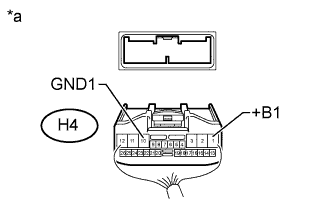

CAN COMMUNICATION SYSTEM > Display and Navigation Assembly Communication Stop Mode |
| Detection Item | Symptom | Trouble Area |
| Display and Navigation Assembly Communication Stop Mode | Either condition is met:
|
|
| 1.DISCONNECT CABLE FROM NEGATIVE BATTERY TERMINAL |
Disconnect the cable from the negative (-) battery terminal before measuring the resistances of the main wire and the branch wire.
| Condition | Waiting Time |
| Vehicle enrolled in G-BOOK system | 6 minutes |
| Vehicle not enrolled in G-BOOK system | 1 minute |
| NEXT | |
| 2.CHECK OPEN IN CAN BUS WIRE (DISPLAY AND NAVIGATION MODULE DISPLAY BRANCH WIRE) |
 |
Disconnect the H4 display and navigation module display connector.
Measure the resistance according to the value(s) in the table below.
| Tester Connection | Switch Condition | Specified Condition |
| H4-21 (CANH) - H4-22 (CANL) | Engine switch off | 54 to 69 Ω |
| *a | Rear view of wire harness connector (to Display and Navigation Module Display) |
|
| ||||
| OK | |
| 3.CHECK HARNESS AND CONNECTOR (DISPLAY AND NAVIGATION MODULE DISPLAY - BATTERY AND BODY GROUND) |
|  |
Connect the cable to the negative (-) battery terminal.
Measure the resistance according to the value(s) in the table below.
| Tester Connection | Condition | Specified Condition |
| H4-10 (GND1) - Body ground | Always | Below 1 Ω |
Measure the voltage according to the value(s) in the table below.
| Tester Connection | Condition | Specified Condition |
| H4-1 (+B1) - Body ground | Always | 11 to 14 V |
| *a | Rear view of wire harness connector (to Display and Navigation Module Display) |
|
| ||||
| OK | ||
| ||